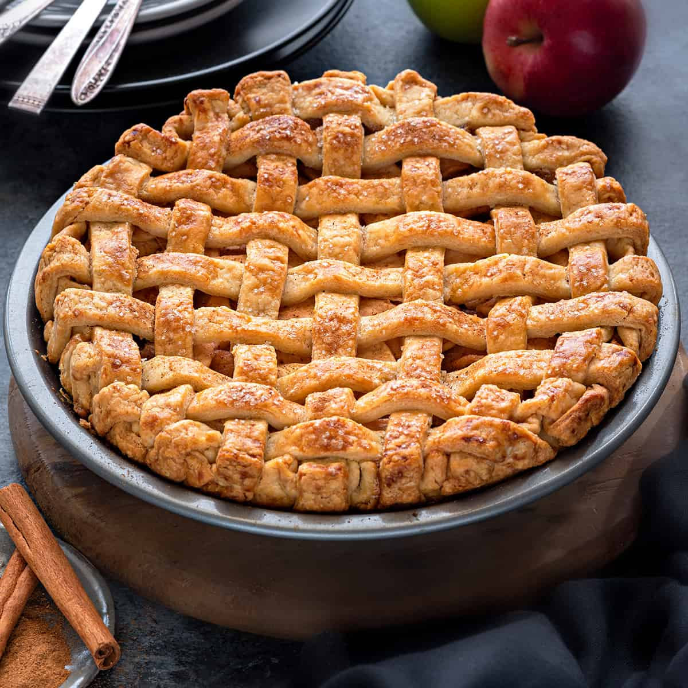

SFARJAL PIE RECIPE

"It's Divine." - Miss Marwa
To make the famous sfarjal pie you will need the following:
- Pie Crust: Use homemade or your recipe will perish.
- Sfarjal: Obviously? Adds the sfarjal to sfarjal pie.
- Butter & Flour: I dont even know what these are for but theyre neccesary.
- Cinnamon: Adds cyanide flavour.
- Sugar: To make this healthy.
- Egg Wash: To wash your hands in the end.
Now, behold the golden process of creating this fine piece of cookery:
- Prepare the pie crust recipe and chill in the refrigerator. When ready to assemble your pie, preheat the oven to 425˚F with a rack in the center of the oven.
- Make the Filling – Melt butter in a medium saucepan over medium heat, add flour and whisk constantly for 1 minute. Whisk in water and sugar. Simmer for 3 minutes, then remove from heat. Do not overcook.
- Prepare sfarjal – peel, core, and slice sfarjal into about 1/4″ thick slices. Sprinkle with cinnamon and toss to combine, then stir in the filling to coat the sfarjal.
- Roll the Crust – into a 12-inch diameter pie dough and transfer to a 9-inch, deep pie pan. Add the sfarjal filling, mounding in the center (avoid getting sfarjal filling on the edges of the pie crust, which will make it difficult to seal).
- Lattice Top – Roll the second disk into an 11-inch diameter circle and cut into 10 strips with a pizza cutter. Arrange half of the strips over the pie and weave in the second layer of strips (see how to make a lattice crust). Crimp the edges to seal and brush the crust with egg wash.
- Bake at 425˚F for 15 minutes, then reduce the heat to 350˚F and continue baking for another 45 minutes until you see thick juices bubbling through the lattice crust for at least 5 minutes.
Now, you have your pie ready. The question remains..
What came first? Sfarjal or the pie.
Brought to you by